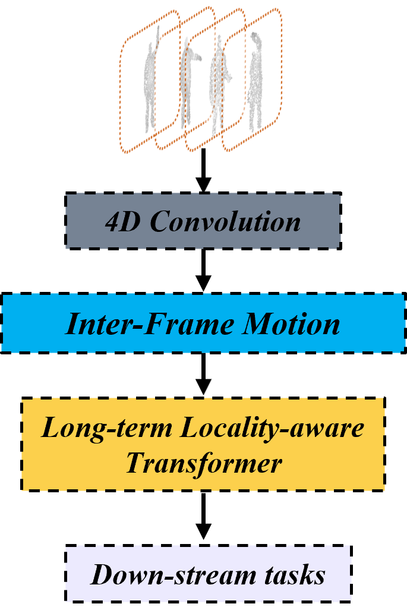

|
Zhi Zuo INTJ / 二次元 / 咖啡和猫 I'm a second-year master's student in Computer Science and Tecnnology at the Nanjing University of Aeronautics and Astronautics (2023-2026), advised by Prof. Pan Gao at Immersive and Interactive Multimedia Lab (I2ML). My current research interests are 3D vision tasks, especially 3D/4D generation/reconstruction and 3D/4D understanding. I am also interested in learning representations. NEWS! I am applying for PhD in Fall 2026, feel free to contact me ⬇ WeChat / Email / CV / Google Scholar / Github |

|
{kind=link}
Research* indicate an equal contribution. |
|  |
Point Long-Term Locality-Aware Transformer for Point Cloud Video Understanding.
Zhi Zuo, Pan Gao, Kang You, Wei Xiang, Jie Qin. Under Review Leverage textual and spatial representations and the step-by-step denoising nature of the pre-trained diffusion model to achieve balanced style transfer results. code / arXiv |
|
Uni4D: A Unified Self-Supervised Learning Framework for Point Cloud Videos.
Zhi Zuo* , Chenyi Zhuang* , Zhiqiang Shen, Pan Gao, Jie Qin. Under Review In-depth analysis of attribute understanding for CLIP text encoder and CLIP-based diffusion models, a novel training-free approach to tackle the attribute binding issue. code / arXiv |
|

|
WonderVerse: Extendable 3D Scene Generation with Video Generative Models.
Hao Feng*, Zhi Zuo*, Jia-Hui Pan, Ka-Hei Hui, Yihua Shao, Qi Dou, Wei Xie, Zhengzhe Liu. Under Review Investigate the diffusion model as an estimator to predict Content Degradation Prior (CDP) with rich content detail for the super-resolution task. code / arXiv |
What's More?My academic career is guided by two principles: "A believing heart is a magic" as my faith and commitment to any upcoming event; and "simple but effective" as a guideline for my work style with a high level of productivity and creativity. |